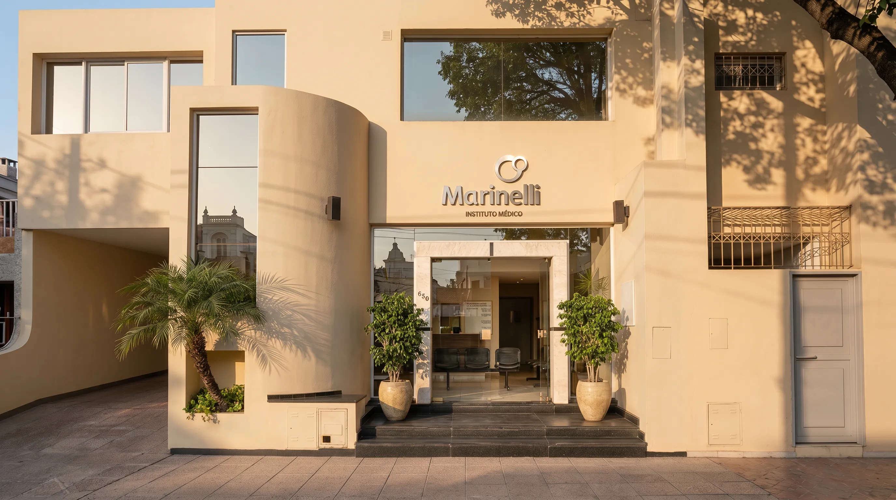
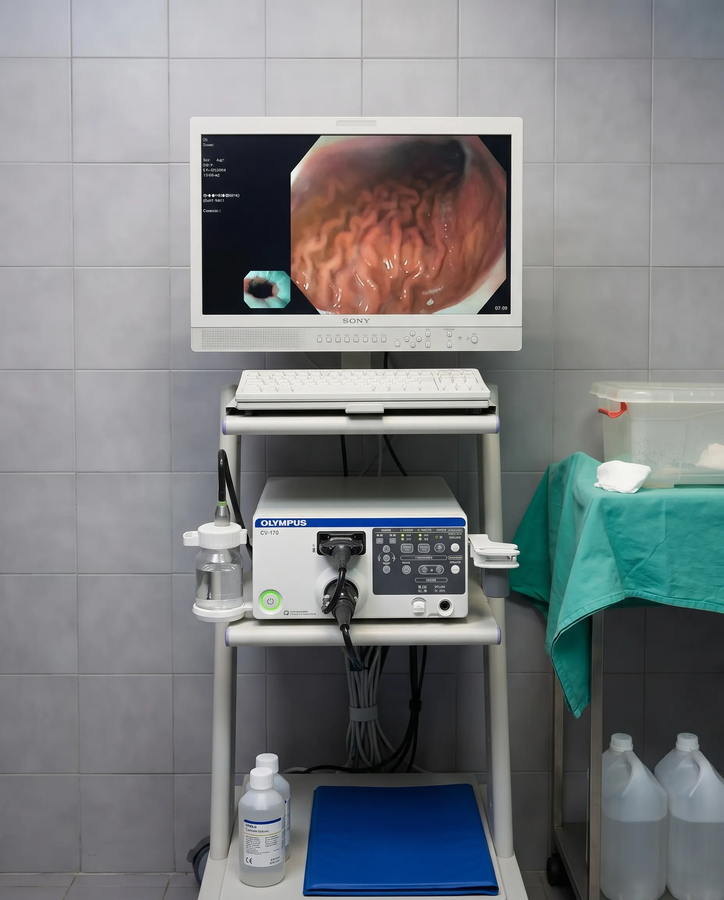
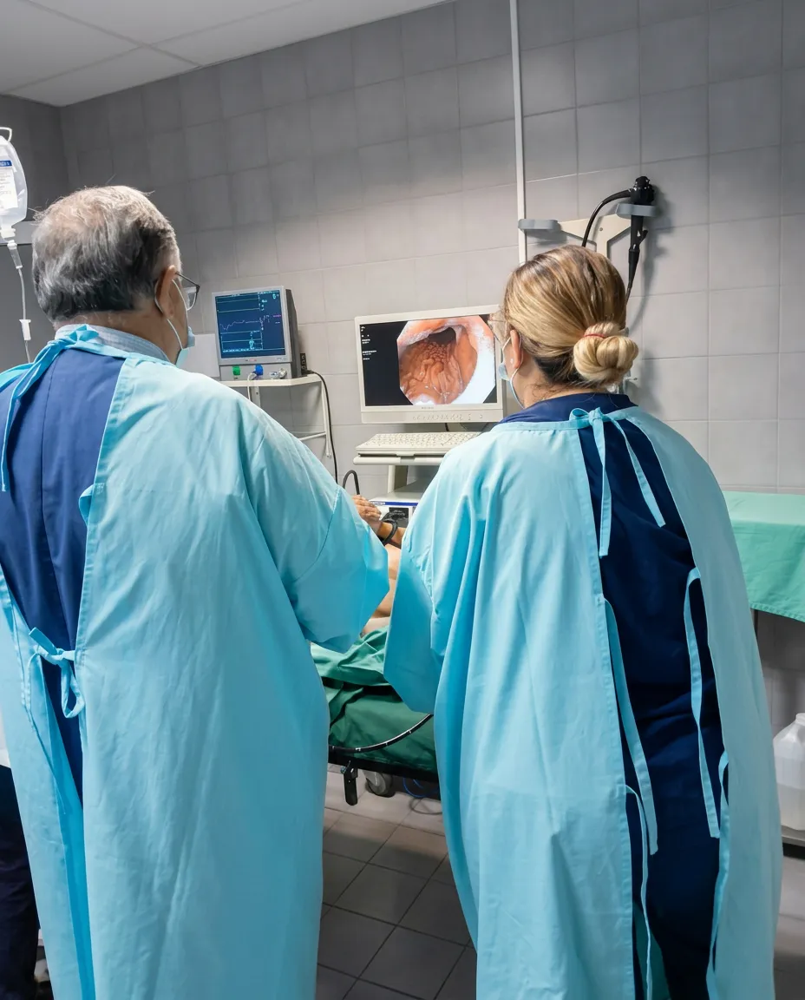

Sobre el Instituto
El instituto
El Instituto Médico Quirúrgico Marinelli nace de la trayectoria del Dr. Carlos Marinelli, cirujano general y especialista en gastroenterología con décadas de ejercicio profesional en La Rioja.
Su visión fue construir una institución médica con la infraestructura que los pacientes y los profesionales de la provincia merecen: 20 consultorios equipados, dos quirófanos habilitados para cirugías ambulatorias, y una estructura administrativa que permite a cada especialista concentrarse en lo que importa.




Enfoque centrado en el paciente
Cada plan de tratamiento se personaliza cuidadosamente para satisfacer las necesidades individuales del paciente y su historial médico.
Nuestra Misión
Brindar servicios de salud de calidad, centrados en la atención personalizada, la prevención y el acompañamiento continuo de cada paciente.
Nuestra Visión
Ser un centro médico de referencia por la excelencia profesional, la innovación en nuestros servicios y el compromiso humano con la comunidad.
Nuestros Valores
Compromiso: actuamos con responsabilidad y dedicación.
Empatía: escuchamos y comprendemos las necesidades de cada persona.
Ética: mantenemos la transparencia y el respeto en cada acción.